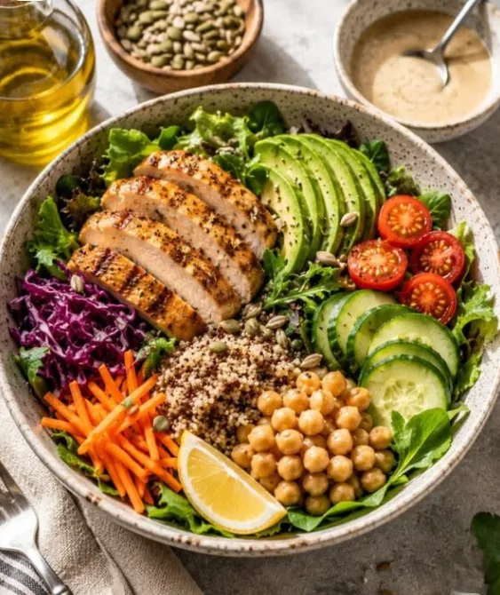

Balanced
nutrition
Простой рецепт сбалансированного приёма пищи
Тёплый боул с куриной грудкой, киноа и овощами — пример тарелки ½–¼–¼. Готовится за 25 минут, содержит белок, сложные углеводы, клетчатку и полезные жиры.
Ингредиенты:
- Киноа — 70 г
- Куриная грудка — 150 г
- Брокколи — 150 г
- Помидоры черри — по вкусу
- Авокадо — ½ шт.
- Оливковое масло, лимон, специи
Пошаговый рецепт:
- Промойте киноа и отварите 12–15 минут в подсоленной воде (пропорция 1:2).
- Брокколи разберите на соцветия и приготовьте на пару 5–7 минут — так сохранится максимум витамина C.
- Куриную грудку посолите, поперчите и запеките 12–15 минут при 180 °C.
- Нарежьте помидоры черри и авокадо, сбрызните лимонным соком.
- Соберите боул: половина — овощи, четверть — киноа, четверть — мясо.
- Полейте оливковым маслом и посыпьте семенами кунжута или тыквенными семечками.
